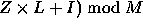
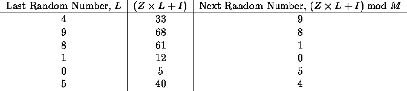

| Pseudo-Random Numbers |
Computers normally cannot generate really random numbers, but frequently are used to generate sequences of pseudo-random numbers. These are generated by some algorithm, but appear for all practical purposes to be really random. Random numbers are used in many applications, including simulation.
A common pseudo-random number generation technique is called the linear congruential method. If the last pseudo-random number generated was L, then the next number is generated by evaluating (  , where Z is a constant multiplier, I is a constant increment, and M is a constant modulus. For example, suppose Z is 7, I is 5, and M is 12. If the first random number (usually called the seed) is 4, then we can determine the next few pseudo-random numbers are follows:

As you can see, the sequence of pseudo-random numbers generated by this technique repeats after six numbers. It should be clear that the longest sequence that can be generated using this technique is limited by the modulus, M.
In this problem you will be given sets of values for Z, I, M, and the seed, L. Each of these will have no more than four digits. For each such set of values you are to determine the length of the cycle of pseudo-random numbers that will be generated. But be careful: the cycle might not begin with the seed!
Each input line will contain four integer values, in order, for Z, I, M, and L. The last line will contain four zeroes, and marks the end of the input data. L will be less than M.
For each input line, display the case number (they are sequentially numbered, starting with 1) and the length of the sequence of pseudo-random numbers before the sequence is repeated.
7 5 12 4 5173 3849 3279 1511 9111 5309 6000 1234 1079 2136 9999 1237 0 0 0 0
Case 1: 6 Case 2: 546 Case 3: 500 Case 4: 220